Spirit Detective
Spirit Detective is a manga styled balloon. It comes with 4 sizes included, directional variants for each size, and 13 unique styles.
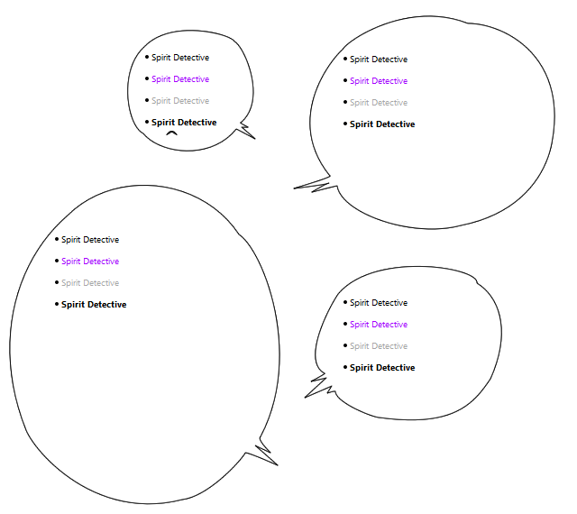
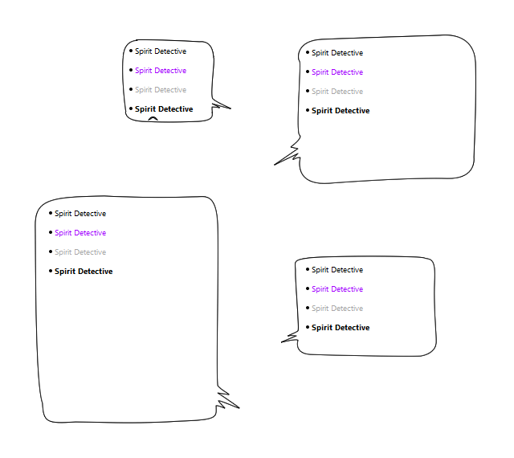
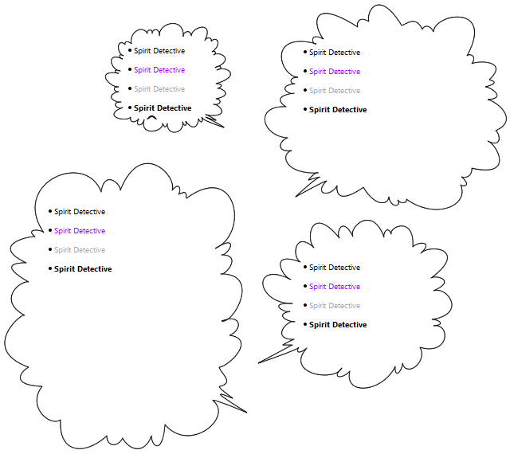

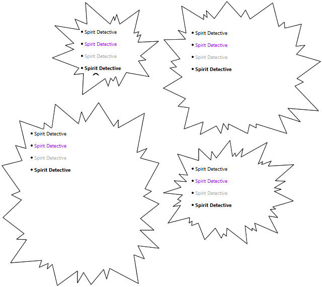

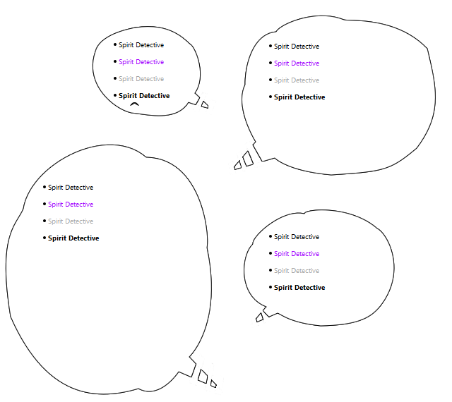
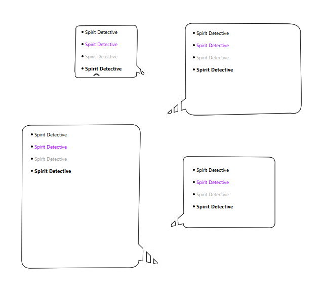
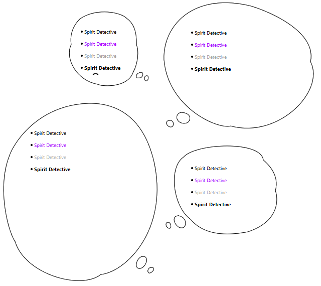

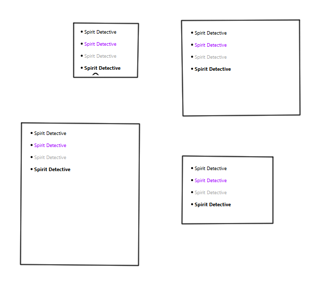

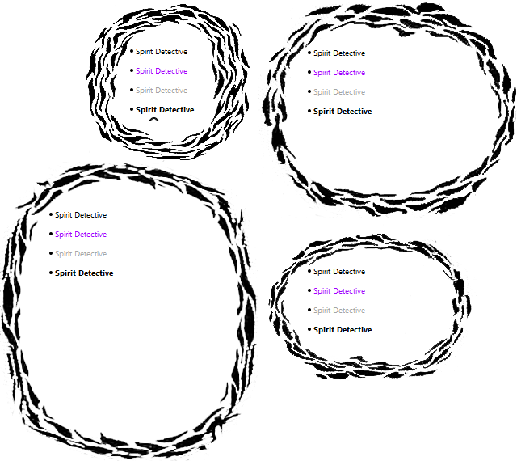
Spirit Detective is a manga styled balloon. It comes with 4 sizes included, directional variants for each size, and 13 unique styles.
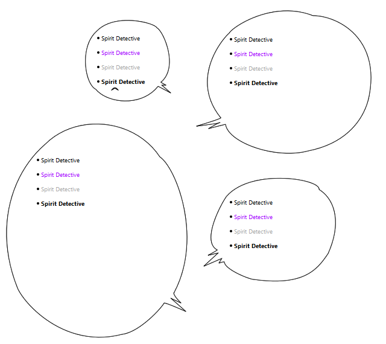
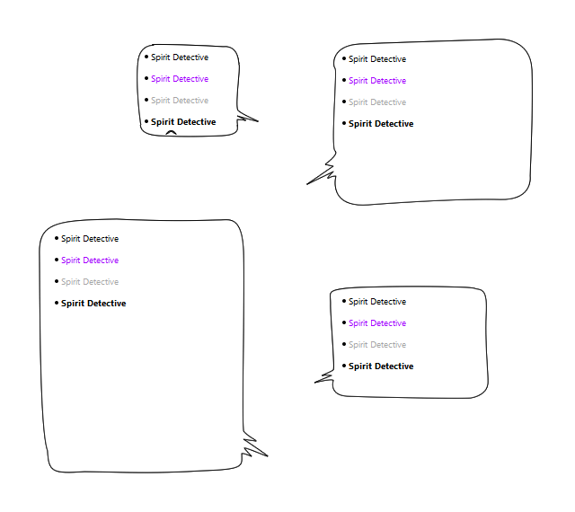
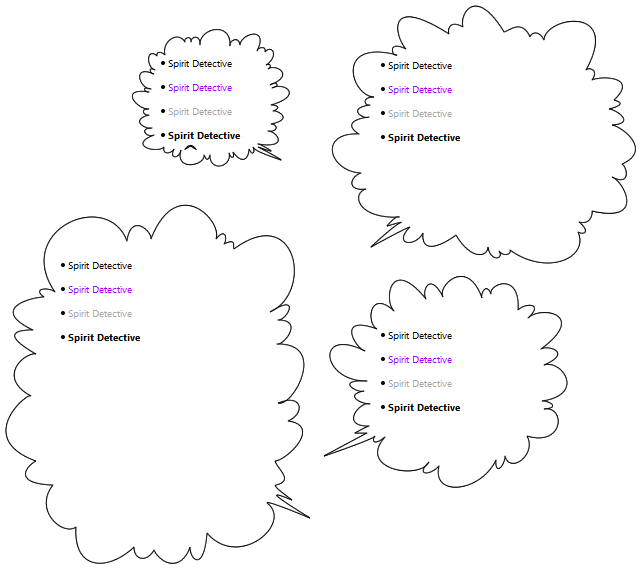
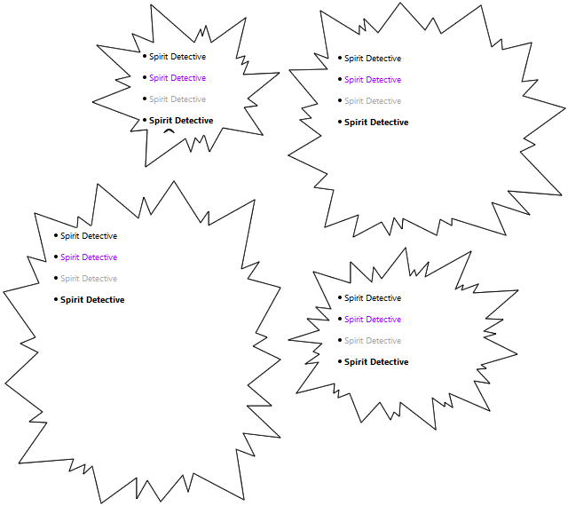
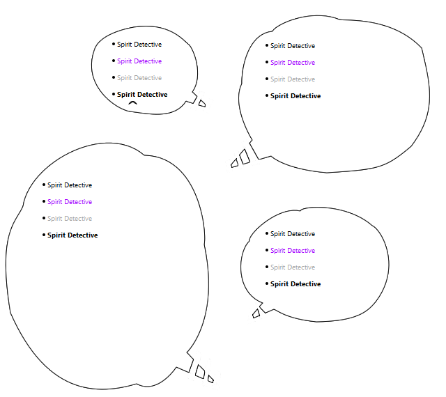
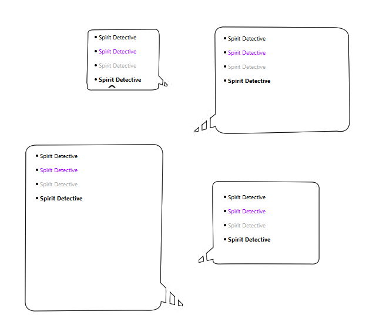
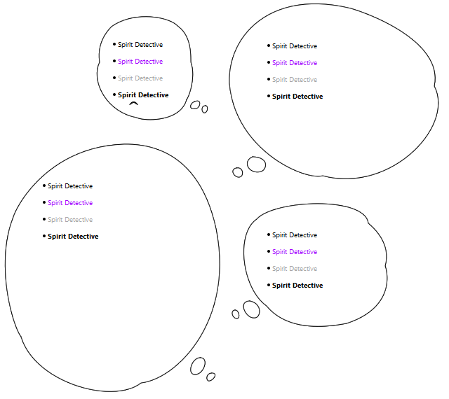
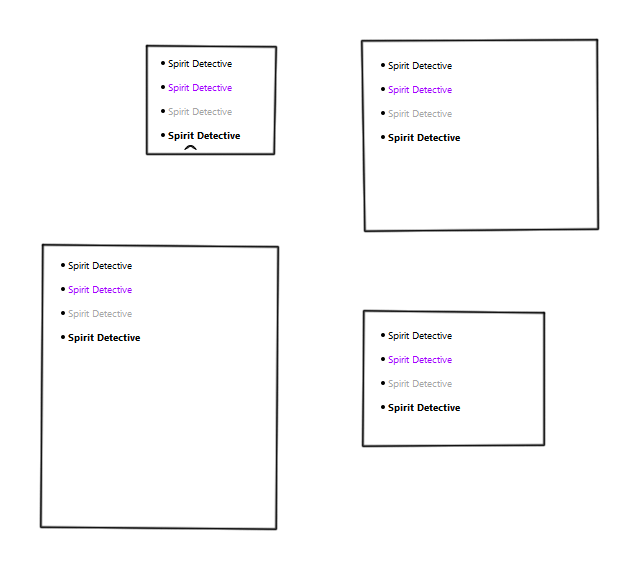
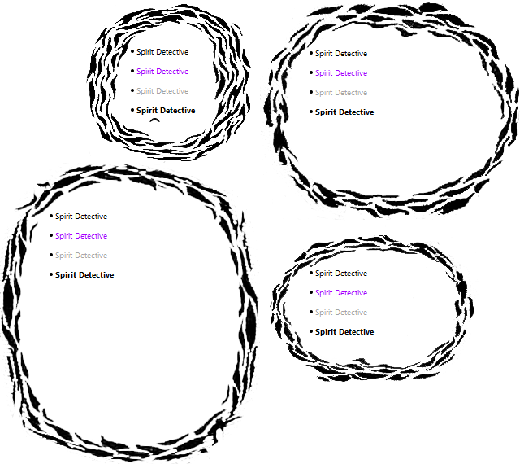